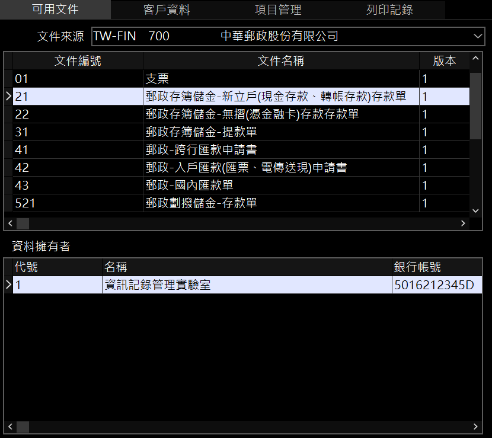
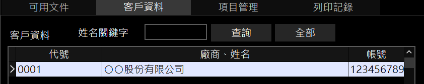
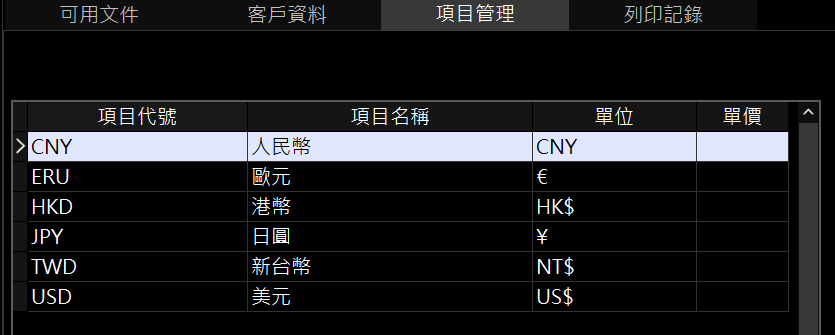
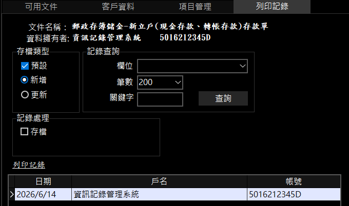

工作頁
工作頁主要包含下列 4 個核心管理介面：
-
可用文件：使用本軟體進行任何作業之前，需要先選擇「文件來源」，再指定「資料擁有者」（使用文件的主體）後，所有的動作，就會針對這個組合進行；例如輸入資料、存檔、登錄文件編號，未來輸入（列印）資料查詢。

可用文件工作頁
-
客戶資料：文件內容的相對人（例如：發票的收票人、信件的收信人）。

客戶資料工作頁
-
項目管理：文件中需要引用的資訊，例如常用於發票的品名（代號、名稱單位、單價），或會計文件的科目、外幣（代號、名稱單位）。

項目管理工作頁
-
列印記錄：顯示列印（預覽）的歷史資料，便於叫出來重複使用，避免相同的資料重新輸入的問題。
- 欄位項目管理：列印記錄表格中呈現的欄位項目，可以由紀錄顯示設定進行管理。
- 欄位寬度設定：點選列印記錄標籤後，可以拖拉或指定欄位改變欄位寬度，完成後，再按一次列印記錄標籤即可儲存欄寬設定。
- 刪除列印記錄：直接在該筆紀錄用滑鼠左鍵按兩下即可刪除該筆資料。

列印記錄工作頁